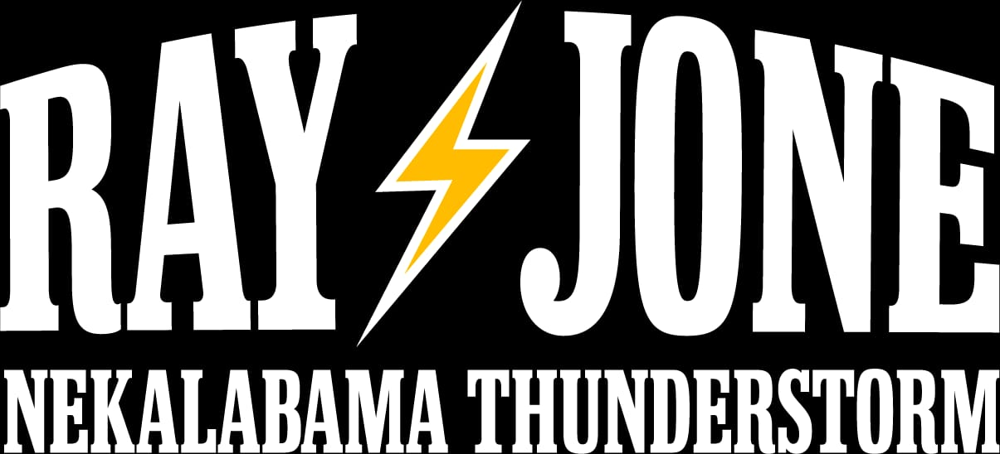
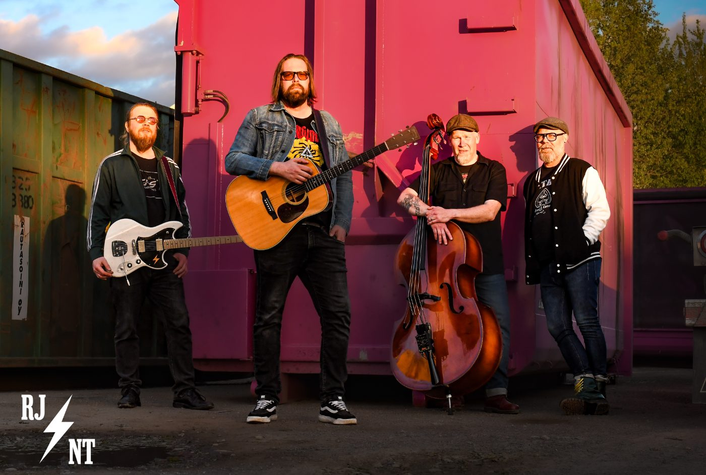
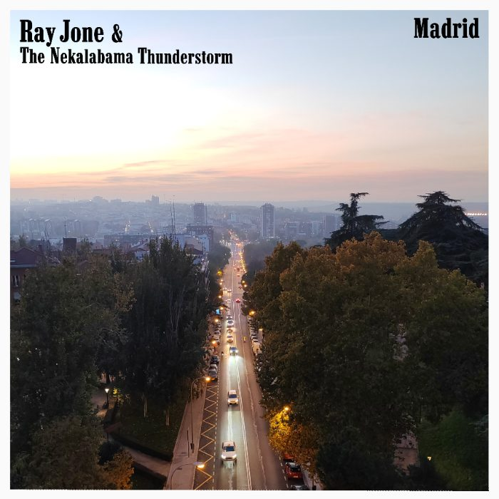

for the long drives, late nights and lives lived full
Country soul · Blues · Americana

Kuva: Elmo Romppanen
- Ray Jone — Vocals & Acoustic Guitar
- Mikko Laine — Electric Guitar
- Antti Romppanen — Drums
- Tommi Lukinmaa — Upright Bass
Bio
Ray Jone & The Nekalabama Thunderstorm blend raw country soul with deep blues roots, creating a sound that’s as weathered and honest as the stories they tell.
The band craft music that feels both grounded and electrified — like a thunderstorm rolling through a southern backroad town.
Heartfelt, gritty, and steeped in Americana, Ray Jone and The Nekalabama Thunderstorm offer songs for the long drives, late nights, and lives lived full.
Kuuntele · Listen
Uusin single
Madrid
Single
Keikat · Gigs
- 2025
-
la 14.6.2025Bar Groove · Tampere
-
la 20.9.2025Kulttuuriravintola Railo · Nekala
-
to 16.10.2025Pub Armo · Tampere
-
pe 28.11.2025Bar Groove · Tampere
-
la 13.12.2025Kulttuuriravintola RailoYksityistilaisuus
-
pe 19.12.2025Pub Armo
- 2026
-
la 7.3.2026Kulttuuriravintola Railo
-
to 19.3.2026Frank The Lobster · TampereRJNT Trio
-
la 21.3.2026Oluthuone · TampereRJNT Trio
-
la 18.4.2026Varjobaari · HervantaRJNT Trio
-
to 11.6.2026Frank The Lobster
-
pe 24.7.2026Bar Loose · Helsinki
-
la 25.7.2026Vastavirta klubi · Pispala
-
la 26.9.2026Haikan lavaYksityistilaisuus
-
la 17.10.2026Pub ArmoRJNT Duo
- 2027
-
la 3.7.2027Kullaa Rock n Roll Rumble
Keikkamyynti · Booking
Puhelin
Sähköposti